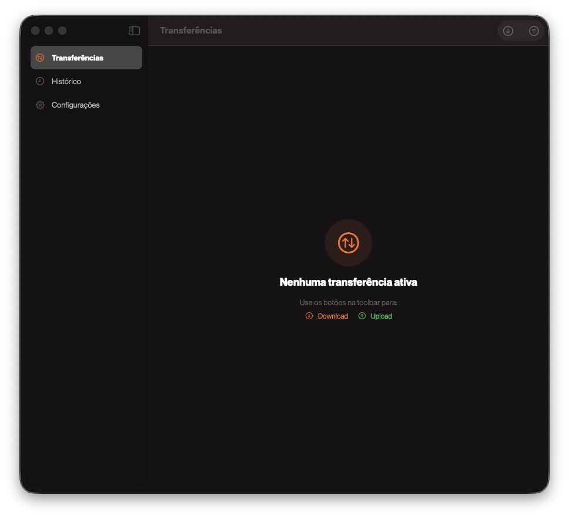

Baixe arquivos e pastas inteiras do Google Drive direto para o seu Mac. Rápido, nativo e sem restrições de tamanho.
Projetado para produtoras, editores de vídeo e equipes que trabalham com arquivos pesados no Google Drive.
Baixe pastas inteiras sem os limites do navegador. Sem erro de cota, sem travamentos.
Envie arquivos e pastas para qualquer pasta do Google Drive. Arraste e solte.
Baixe múltiplos arquivos simultaneamente com controle de velocidade e banda.
Escolha exatamente quais arquivos baixar de uma pasta. Navegue a estrutura antes de baixar.
Conecte várias contas Google Drive e alterne entre elas com um clique.
Acompanhe o progresso direto na barra de menu do macOS. Velocidade e ETA em tempo real.
Nenhuma configuração complicada. Instale, conecte e baixe.
O app detecta automaticamente ou te guia na instalação do rclone, o motor por trás dos transfers.
Faça login com sua conta Google diretamente pelo app. Suporte a múltiplas contas.
Cole qualquer link do Google Drive — arquivo ou pasta. O download começa imediatamente.
Tutorial completo de instalação e configuração da versão 1.7.

Gratuito, open source e feito para macOS. Baixe a versão mais recente no GitHub.
Download para macOS